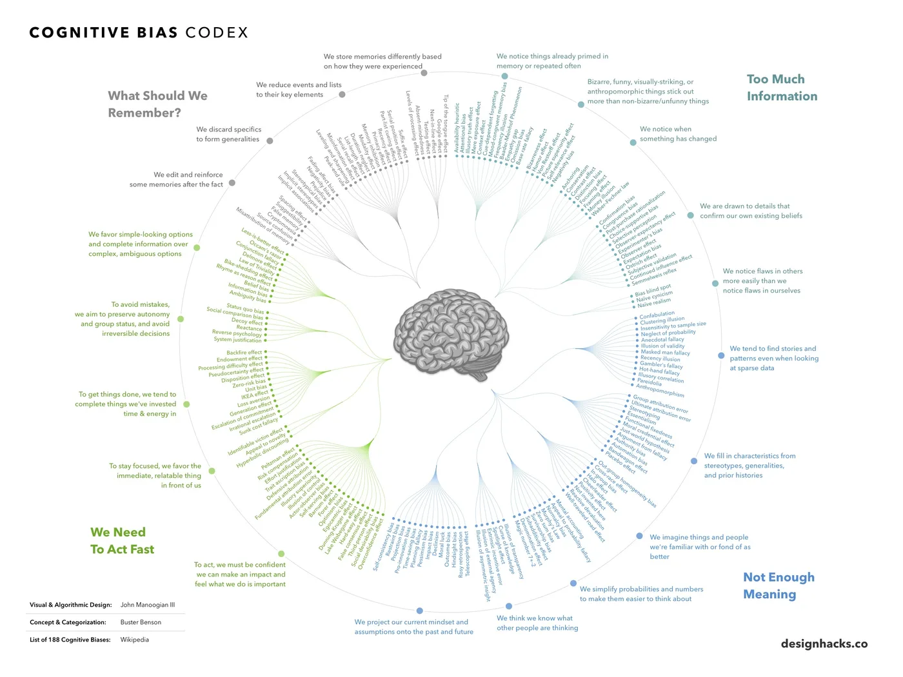
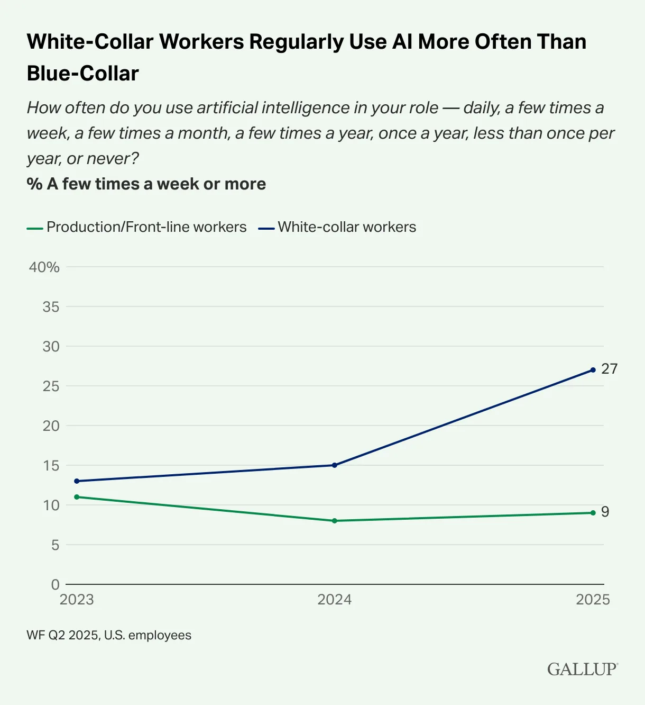

Kids Want News Literacy Instruction
“The News Literacy Project’s study shows that an overwhelming majority of teens (94%) want media literacy instruction, but most aren’t getting it.”
A weekly collection of education-related news from around the web.
← Previous Issue · Next Issue →
An excellent week.
Epistemology and its sibling media literacy are having their moment — one that I suspect will only continue to grow. As the isolating nature of social media and news filter bubbles have now for almost two decades created separate realities for citizens of the world, the broader cultural ecosystem has been forced to wrestle more openly with how to cross this growing epistemological divide. How do we move forward together when entire swaths of global citizens have entirely different understandings not just of politics, but of how fact is determined? I’ve been interested in this growing awareness since 2018, when danah boyd spelled it out in a keynote at SXSWedu. This week’s features offer perspectives through the lenses of both epidemiology and media literacy. (Related, in the AI update, find an excellent tool for sorting through information in the form of a GPT designed by Mike Caulfield to use the internet for fact checking. It’s very good.)
Also this week, find a rich section on learning science, two good posts on character that are particularly helpful for those in leadership, one school’s course on “adulting” and others.
These and more, enjoy!
Peter

“The News Literacy Project’s study shows that an overwhelming majority of teens (94%) want media literacy instruction, but most aren’t getting it.”
“This dysfunctional dynamic misses the bigger picture of what’s happening. For many, this phrase represents a sincere effort to find answers they’re struggling to get elsewhere. And when that genuine search for information is met with an expert’s scorn, it can push people away from trustworthy sources.”
“The course outline for Adulting 101 includes going to college and other pathways; getting a job; banking; budgeting; doing taxes; housing; home maintenance and safety; health, nutrition, and cooking; insurance; voting and community involvement; digital citizenship; and personal relationships and conflict. Adulting 102 covers travel, doing laundry, personal and mental health, tech or digital health, personal budgeting, time management, and goal setting.”
“It’s about helping students understand that rules and institutions protect all of us.”
“Well beyond the classroom, bigoted and extremist views are on the rise and vying for mainstream acceptance, raising questions about whether principles of neutrality and free-speech rights are proper and adequate responses to the threats.”
“Among the historians I spoke with, one of the more enthusiastic experimenters was Fred Turner, who teaches in the communication department at Stanford. I arrived at his office expecting to interview him about how A.I. fits into the long history of information technology, but we wound up spending much of our time discussing how ChatGPT has helped him with his latest book project, which revolves around the New York City art scene of the 1970s and 1980s.”
“Imagine a Portable Learning Model… that is, a framework for how to understand a user as a learner that is contained outside of any single chat or learning tool. Let’s call this a learner’s PEARL: a Portable, Evidence-Based, Adaptive Representation of a Learner.”
An excellent week.
Mike Caulfield’s AI fact-checking tool is a powerful, free resource for anyone. Have a claim that you’d like fact checked? Mike Caulfield has done the work of designing the AI assistant to help you get it done. These kinds of resources will be invaluable in our new world.
Also in the features, find the NYT’s exploration of therapy chatbots. A positive use of AI’s ability to engage on a social-emotional level, therapy chatbots and other pro-social AI tools will help solve some of the challenges we face as globally interconnected society. In a time when AI’s development seems a ceaseless march onwards — for better and for worse — we need more of these positive use cases.
Also this week, find several posts about the changing job market AI is ushering in, as well as a detailed report on the importance of learning without AI first and then using AI afterwards. The Tech/AI: Education post dives deep into the evidence of a recent study.
These and more, enjoy!
Peter

“Here it is — I just released a (largely) non-hallucinating1 rigorous AI-based fact-checker that anyone can use for free. And I don’t say that lightly: I literally co-wrote the book on using the internet to verify things. All you do is log into ChatGPT, click the link below, and put in a sentence or paragraph for it to fact check.”
““When you’re in a situation where you can’t really be open with everyone else, you at least have this app,” Cassandra continued. “And I think that’s kind of how it builds a connection. You go through these lessons, and it tells you, ‘Hey, good job, you’re doing great!’ Or one of the messages I really like that’ll come up when it notifies me to do a daily check-in, it’ll say: ‘I’m really proud of you, Cassie. This stuff is really hard to talk about.’””
“When students who'd never used AI were introduced to ChatGPT in session four, something interesting happened. Their brain activity increased rather than decreased. They showed "network-wide spikes in alpha, beta, theta, and delta bands" [10]. This suggests prior cognitive investment creates a foundation that enhances AI collaboration. Students who build thinking skills first can use AI as a genuine tool. Students who rely on AI from the start never develop those foundational skills. The timing matters enormously. Brain-to-AI users maintained cognitive ownership while gaining efficiency.”
“We had our research conference a week ago and almost every HR leader or head of recruiting told me that they are rebuilding their entry level development programs for young employees. Why? Driven by tightening the budgets and entry hire slowdowns, their talent pipeline was weakened.”
“Our goal is for ChatGPT’s default personality to be warm, thoughtful, and helpful without seeking to form emotional bonds with the user or pursue its own agenda… Model training techniques will continue to evolve, and it’s likely that future methods for shaping model behavior will be different from today's. But right now, model behavior reflects a combination of explicit design decisions and how those generalize into both intended and unintended behaviors.”
“When I asked Peter, an engineer, what he thought humans still had to offer in this work, he said: ‘an audience that matters’. In his view, robots would someday do most everything humans could do – in education, for example, that would include grading papers and answering questions about the material. He still wasn’t sure, however, if one could ‘project enough humanness onto a robot that you want to make it proud of you’.”